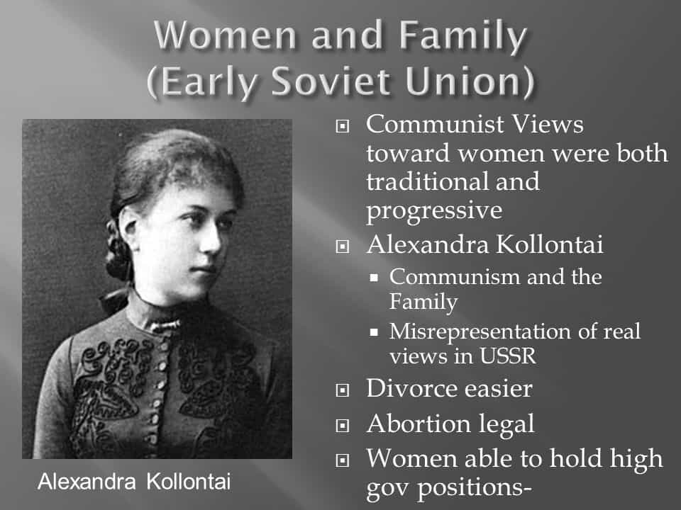

Daryush "Roosh" Valizadeh created ROK in October 2012. You can visit his blog at RooshV.com or follow him on Twitter and Facebook.


There are many countries in Eastern Europe that have superior women than in America, but when you start to examine these women as wives and not only casual sex partners, you encounter a big problem: they value their education and careers above that of family. The reason? Education is offered for free or at a greatly subsidized rate by the government. Western governments are therefore programming women into becoming sterile office slaves and consumers instead of good wives and mothers.
I’ve met hundreds of Eastern European women from several countries, and because I’ve focused on living in cities, I’ve been unable to find more than a handful under the age of 25 who has shown eagerness into soon becoming a mom. Instead, the girls I’ve known have made their future employment the most important goal of their lives. Here is a conversation I’ve had several times:
Me: “Why don’t you want to be a mom soon?”
Girl: “Because I have to focus on my career first.”
Me: “Why don’t you just find a good man instead? He will take care of you.”
Girl: “Because men are bad. They cheat and become alcoholics. *Insert horror story of an awful man who a friend of a friend got married to.*”
Me: “So your job is more important than your family?”
Girl: “I need a backup plan in case my husband becomes bad.”
Men are bad, and because of that, she must spend years in university where she gets to experiment with different cocks and where she is firmly taken out of her natural role to learn how to serve a corporate master while her future kid goes to day care and her husband eats cans of tuna because his wife is too tired from work to cook, assuming she even knows how. A man’s marriage with such an empowered woman is doomed before he knows it.
Women want to have their cake and eat it too. They want to be able to marry the man they are most attracted to, and if that doesn’t work, still be able to enjoy an independent and comfortable life of Ikea furniture and Starbucks without having to put up with a man’s reasonable demands to cook him dinner and make sure the children are taken care of.
To accomplish that task, she must spend thousands of hours studying a topic like law or international business relations and became an obedient office worker instead of learning how to obey her husband. And because of this desire, which is being fully supported by the government with free or subsidized education, usually in the form of interest-free loans, we are seeing the disappearance of the nuclear family along with high divorce rates and out-of-wedlock births where future degenerates of the state get to watch mommy get sexy matches on Tinder.
Women win through this scheme because they are able to say no to their husbands without repercussions and the government wins because women are less dependent on men for their needs. These women then become dependent on the state and corporations, which can easily lead them to behaviors of their choice, such as not reproducing.
If you take the depopulation agenda to be accurate then it makes sense that you would want to train women to do anything but bond with men in a way that leads to reproduction. That is exactly what most Western governments have done, and it starts by essentially brainwashing women of the need to be free from their husbands by making them obsessed to earn money produced by central banks. Any country where the idea of female employment is seen as “common sense” is in the process of having their culture destroyed, if it hasn’t already been done.
But do women really get a good deal out of this? In order to survive, they must obtain resources from corporate employment, the government, or an individual man. They cannot exist in the world on their own.
The less a woman has to depend on a man’s resources, the less she will have trained herself on how to be a good wife and mother. She may still end up being a good wife and mother, but she been put on a path since her teenage years by the system to spend considerable amounts of time in corporate and victimhood training, not wife training. Therefore if you end up marrying a woman who places high value in her “empowered” job, and she refuses to quit that job when her presence is needed in the home, your misfortune comes not just from your mistake in choosing her, but in the fact that the government, through their education programs and directives, have ensured that very outcome. In effect, you’re being actively cucked by your own government.
Even in Eastern Europe, it is very difficult to find a woman under the age of 25 in a big city who wants to soon be a stay-at-home mom, or at least a mom who places secondary importance in her career. The feminist ideas that have infected America first came to Eastern Europe in the form of Soviet communism, which—surprise—had the primary goal to destroy the family unit.
The fact that an Eastern European girl lives in the city while her parents remain in the village means that she has been seduced by the prospect of free education, city lights, and the ability to sleep around without consequences. It is unlikely that she will be able to provide you with the home life that you deserve above that of an American woman, especially since they both approach career and motherhood in a nearly identical way. Unless you start visiting villages or churches, you’ll end up disappointed.

If you look at a map of fertility rates around the world, you can clearly see that countries with fertility under the replacement rate have fanatical programs about educating women. Doing so makes a woman’s most fertile period of her life go to waste so that she can spend 5-10 years getting an education in obedience, consumerism, and selfie-taking while developing a bullshit career that will not make her happier than having a family.
If I were king of a land and wanted to destroy a neighboring kingdom, I’d simply implant the idea of female education within their culture so that they’d simply die out within a few generations. In the meanwhile, have fun trying to find a good woman who believes in the most basic of family values. The government already got to her, and put ideas in her head which will make it very hard for you to experience the simple act of having a family. Sadly, besides finding a magical unicorn, I see no way for us to fix this problem for our generation.
 If you like this article and are concerned about the future of the Western world, check out Roosh's book Free Speech Isn't Free. It gives an inside look to how the globalist establishment is attempting to marginalize masculine men with a leftist agenda that promotes censorship, feminism, and sterility. It also shares key knowledge and tools that you can use to defend yourself against social justice attacks. Click here to learn more about the book. Your support will help maintain our operation.
If you like this article and are concerned about the future of the Western world, check out Roosh's book Free Speech Isn't Free. It gives an inside look to how the globalist establishment is attempting to marginalize masculine men with a leftist agenda that promotes censorship, feminism, and sterility. It also shares key knowledge and tools that you can use to defend yourself against social justice attacks. Click here to learn more about the book. Your support will help maintain our operation.
This article was originally published on Roosh V.
Read Next: Soviet Defector Yuri Bezmenov Accurately Predicted How America Would Decline